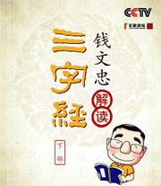
百家讲坛 解读《三字经》
介绍：
“人之初，性本善。性相近，习相远。苟不教，性乃迁。教之道，贵以专。”《三字经》这样一本小册子所以能够被历代人们奉为经典而不断流传，一定具有其独特的思想价值和文化魅力。钱文忠先生会以什么样的方式来解读这部传统启蒙经典呢...

百家讲坛 喻大华评说嘉庆王朝
介绍：
嘉庆皇帝是清朝入关之后的第五代皇帝，姓名为爱新觉罗?永琰。生于公元1760年，卒于公元1820年。他三十七岁即位，在位二十五年，享年六十一岁。庙号仁宗，谥号睿皇帝。与父亲乾隆帝相比，嘉庆帝是一位既没有政治胆略，又缺乏革新精神；既没有理政才能，又缺乏果敢作为的平庸天子...
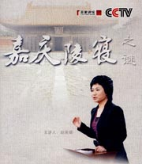
百家讲坛 嘉庆陵寝
介绍：
嘉庆陵寝――昌陵，位于泰陵西1公里，修建于1796年―1803年(嘉庆元年到八年)，是嘉庆皇帝爱新觉罗J琰和孝淑睿皇后喜塔腊氏的陵寝。嘉庆皇帝为乾隆皇帝第十五子，在位25年（1796－1820年）。乾隆皇帝曾立过两位太子，但都因出天花而夭折，遂改立由妃子生的J琰...
百家讲坛 鲍鹏山新说《水浒》_武松
介绍：
武松是中国古典小说《水浒传》中的主要人物之一（也在《金瓶梅》中出现），是梁山一百单八将之一，在梁山排行第十四位，人称行者武松。武勇非凡，曾经在景阳冈上空手打死猛虎，“武松打虎”的事迹也在后世广为流传。

百家讲坛 正说包公
介绍：
包公本名包拯，字希仁，死后谥号为“孝肃”。他生前就享有盛名。根据《宋史》记载，当时的北宋都城汴梁，也就是现在的开封，就流传着这样的民谣：“关节不到有阎罗包老。”意思是说，打官司没有钱疏通关节，不用担心，还有阎王老爷和包公包老爷为你做主呢...

百家讲坛 蜀地探秘
介绍：
杜甫在四川成都，亲手修建了一座草堂，这里成为他生活和创作的殿堂。可是，公元765年五月，在这座草堂里已经生活了五年之久的杜甫，却突然离开了草堂，也离开了成都，乘船东下，并且从此再也没有回去。河南大学教授莫砺锋作客本期节目，为我们讲解杜甫离开草堂和被称为诗圣的缘由...
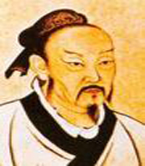
百家讲坛 孟子的智慧
介绍：
本期节目邀请到傅佩荣教授来讲述一下孟子的思想，他的思想可以给我们一个完整的哲学体系，可以帮助我们建立一个正确的价值观。第一集讲述孟子这个人，先从孔孟之道讲起，从孔子本身的遗憾开始说起，而孟子却解开了孔子的遗憾...
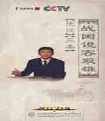
百家讲坛 战国说客双雄
介绍：
有人说，人的所有器官最具攻击性与杀伤力的，不是尖牙利爪、不是拳脚而是舌头；世界上最让人提心吊胆的不是刀剑、不是枪弹也是舌头。被称为中国纵横家鼻祖的张仪，就是一位将口舌之功发挥得淋漓尽致、无以复加的说客...
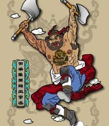
百家讲坛 鲍鹏山新说《水浒》_李逵
介绍：
李逵是中国古代小说《水浒传》中的一位重要人物，他也是在《水浒传》中最鲁莽的人物，尽管如此，但他为人心粗胆大、率直忠诚、仗义疏财，是《水浒传》中不可或缺的角色。

百家讲坛 鲍鹏山新说《水浒》_鲁智深
介绍：
鲁智深是施耐庵所著《水浒传》中的人物，生活在北宋年间，在梁山泊一百单八将中排第十三位。原名鲁达，当过提辖，又称鲁提辖智深。因为见郑屠欺侮金翠莲父女，三拳打死了镇关西，出家当和尚时法名智深，绰号花和尚鲁智深。
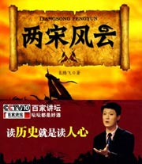
百家讲坛 两宋风云
介绍：
历史上的宋朝，分为北宋和南宋两个时期。在两宋期间，中华大地都发生了哪些惊心动魄的事件？亡国之君宋徵宗，开国皇帝宋高宗，南宋中兴四将，金钱百战名将，又都是些什么样的历史人物呢...
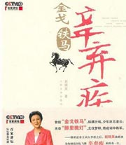
百家讲坛 金戈铁马辛弃疾
介绍：
辛弃疾被认为是宋代豪放派词人的领袖，曾写下许多慷慨豪迈的英雄壮词，也有婉约细腻地表达儿女情长及其日常生活的妙词。而他那不平凡的人生经历又是别一番曲折动人。辛弃疾是中国历史上豪放词派的代表人物之一，被称为词坛飞将。
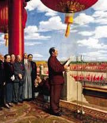
百家讲坛 回首开国大典
介绍：
为庆祝中华人民共和国建国60周年，《百家讲坛》栏目将于10月1日陆续播出6集系列节目《回首开国大典》，本系列将邀请军事科学院研究员江英担任主讲嘉宾。节目将分别从1949年政协会议、国旗、国徽和国歌的诞生；定都北京以及开国大典和阅兵仪式等各方面...
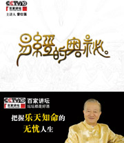
百家讲坛 易经的奥秘
介绍：
传统智慧之瑰宝《易经的奥秘》登陆《百家讲坛》。凝聚着中国古圣先贤古老智慧的《易经》，常常被误解为一本算命的书。那么《易经》真的仅仅是一部算命书么？有学者认为易经是解开宇宙人生密码的宝典，这又是为什么呢...

百家讲坛 风雨张居正
介绍：
我们知道，历史跟人生一样，总是充满了遗憾。就大明王朝的历史而言，我觉得最大的遗憾既不是明成祖朱棣一怒之下杀了执拗的儒生方孝孺，也不是亡国的崇祯皇帝自毁长城杀了边关大将袁崇焕，而是明代嘉靖到万历年间，曾经产生过一位明代历史上最好的老师...

百家讲坛 班墨传奇
介绍：
墨子，一位和孔子同样久负盛名的思想家；鲁班，一位家喻户晓的发明家。墨子曾经创立了一整套守城的工具和方法。墨守成规，正是当时的人们，对于墨子守城有术的称赞；鲁班，有着许多的发明创造，被誉为土木工匠的祖师爷，班门弄斧，正是民间百姓，对于鲁班高超技能的赞许...
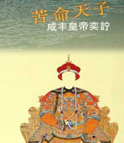
百家讲坛 苦命皇帝咸丰
介绍：
咸丰皇帝的一生其实是极其不幸的一生，他虽然贵为天子，却面对的是中国前所未有过的危局，他虽有心拯救国家于危难，却终究无力回天。我们甚至可以假设：如果当年继承皇位的不是咸丰皇帝，那么，以后百十年间的中国历史必将重写，中国是否会走上另一条发展的道路也未可知...
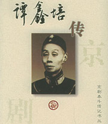
百家讲坛 伶界大王谭鑫培
介绍：
谭鑫培(1847～1917)演员，工老生，曾演武生。本名金福，字望重。因堂号英秀，人又以英秀称之。武汉市江夏区大东门外谭左湾九夫村人。其父谭志道，工老旦兼老生。
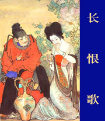
百家讲坛 长恨歌
介绍：
唐玄宗至道大圣大明孝皇帝（公元685－762年），姓李，名隆基，因为谥号突出一个“明”字，又称唐明皇，唐睿宗李旦的第三个儿子。公元712年至756年在位，他开创了唐朝的鼎盛时期，但从他开始唐朝也走上了下坡路，即从安史之乱开始，唐朝逐渐衰落下去。